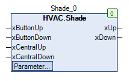

Shade (FB)¶
FUNCTION_BLOCK Shade
Short Descritpion¶
Control of a Venetian blind drive with open/close commands and central controlAdditional functions: Slat adjustment/central control/comfort functionsTypical application: Control of a standard Venetian blind drive
Portrayal¶

Interfaces¶
Inputs¶
Name Datatype
Range
Init-Value
Function
xButtonUp BOOL Requirement - Venetian blind opening via button
xButtonDown BOOL Requirement - Venetian blind closing via button
xCentralUp BOOL Requirement - Venetian blind opening via central control
xCentralDown BOOL Requirement - Venetian blind closing via central control
Outputs¶
Name Datatype
Range
Init-Value
Function
xUp BOOL Release - Venetian blind opening
xDown BOOL Release - Venetian blind closing
Setpoints/parameters¶
Name Datatype
Range
Init-Value
Function
tFullMovement TIME T#30s Duration of full opening/closing
tPulse TIME T#600ms Duration of the pulse for the slat adjustment
tButton TIME T#900ms Time period for distinguishing between slat adjustment/complete opening/closing
tWaitReverse TIME T#2s Waiting period for switching between opening and closing
Functional description¶
General¶
Central control¶
Waiting period of switching between opening and closing tWaitReverse¶
Slat adjustment¶
Full opening/closing¶
Visualisation¶
Information¶
Element Authors
Date
Version Information
Function
Alexander Halter 10.2017 1.0 Initial version
Programming
Adam Bartod 10.2017 1.0 Initial version
Test Alexander Halter 10.2017 1.0 Initial version
Dokumentation Jochen Reu 11.2017 1.0 Initial version
Codesys¶
- InOut:
Scope Name Type Initial Comment Input xButtonUp BOOL Requirement - Venetian blind opening via button
xButtonDown BOOL Requirement - Venetian blind closing via button
xCentralUp BOOL Requirement - Venetian blind opening via central control
xCentralDown BOOL Requirement - Venetian blind closing via central control
Output xUp BOOL Release - Venetian blind opening
xDown BOOL Release - Venetian blind closing
Input tFullMovement TIME TIME#30s0ms Duration of full opening/closing
tPulse TIME TIME#600ms Duration of the pulse for the slat adjustment
tButton TIME TIME#900ms Time period for distinguishing between slat adjustment/complete opening/closing
tWaitReverse TIME TIME#2s0ms Waiting period for switching between opening and closing